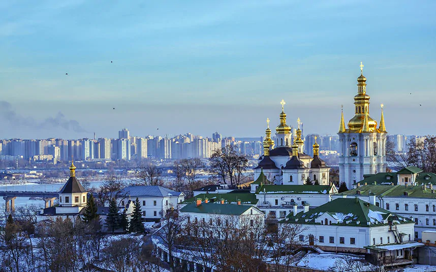

PRISHTINA24
The most in-demand destinations of 2018, according to Google

Football was the driving force behind this year’s most-searched-for travel destinations, according to Google’s end of year report. Moscow, which hosted the World Cup Final in July, experienced the largest surge in the number of flight searches compared with last year, handing the Russian city number one spot in the tech giant’s “top-trending flight destinations” ranking. England’s success in Russia 2018 led many to believe a spot in the final was all-but guaranteed and clamoured for last-minute flights to the city - only for Croatia to knock the Three Lions out in the semi-final.
The Ukrainian capital’s second place was, according to Google, due to the launch of new direct flights from Ryanair, but it is perhaps more likely thanks to a mad dash for flights from the red half of Liverpool ahead of the Champions League Final in May. Scores of Liverpool fans ended up flying the most creative routes to reach Kiev after normal scheduled services sold out, including travelling via countries such as Sweden and Lithuania. Kiev does have some clout as a destination in itself, offering Unesco-protected churches, an atmospheric old town and day trips to Chernobyl.
In third place was Tenerife, to which Google credited the growing popularity of the Canary Island with British holidaymakers. Its neighbour Gran Canaria ranked fifth, behind fourth place Seville. Dalaman, Turkey, gives hope to the country’s recovery from a period of instability with its seventh place, while Sri Lanka (eighth) and Pakistan (10th) show a British appetite for more exotic climes.
The top-trending flight searches for 2018
1 Moscow 2 Kiev 3 Tenerife 4 Seville 5 Gran Canaria 6 Geneva 7 Dalaman 8 Sri Lanka 9 Larnaca 10 Pakistan